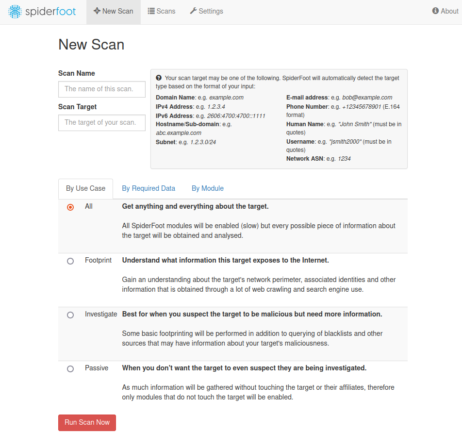

L'objectif de ce tutoriel est de vous présenter l'outil SpiderFoot. SpiderFoot est un outil OSINT facile à utliser avec une interface web intégrée.
Ce tutoriel met à disposition, par le biais de Docker-compose, une machine déjà configurée maintenu par INTEL471.
Récupérez le dockerfile dans le lien suivant, si vous avez déjà installer le docker-compose.yml du challenge, passer à l'étape 3 :
docker-compose.yml
Dans un interpréteur de commande,bash (Linux) ou cmd (Windows), allez dans le répertoire où vous avez téléchargé le fichier docker-compose.yml et effectuez la commande suivante :
Vous disposez maintenant d'une machine avec Spider Foot. Pour mettre en pause ou arreter la machine faite:
Si vous voulez l'installer par vous-même, il est téléchargeable depuis github :
SpiderFoot.
Pour accéder à l'interface de SpiderFoot ouvrez un navigateur et accéder à l'url suivante : localhost:5001.
Maintenant que SpiderFoot est prêt à être utiliser.

Il existe 3 modes d'utilisations :
Le tutoriel est terminé, et vous savez maintenant comment utiliser SpiderFoot. Flag Tutoriel = script-kiddie